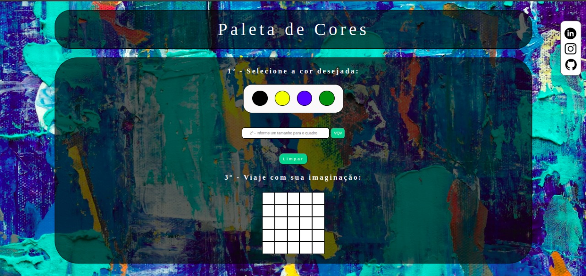
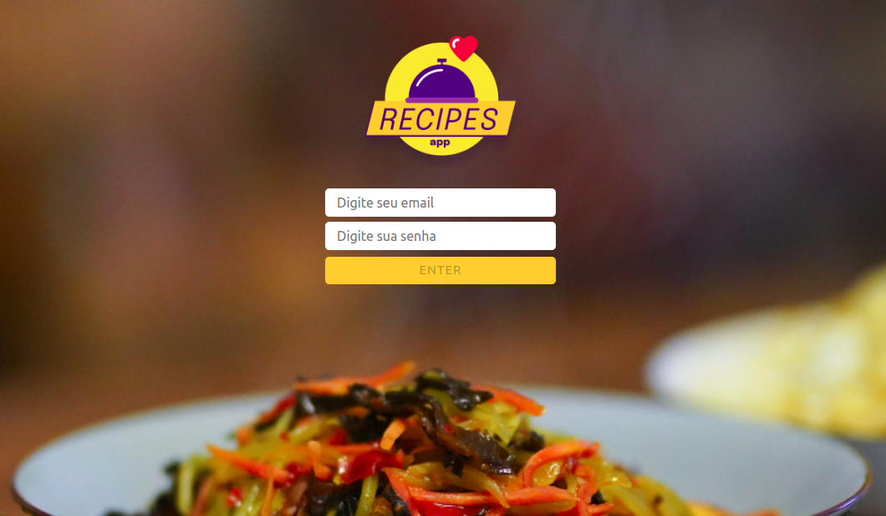

Olá 🙃!
Me chamo Karoline Kohls Stangherlin, tenho 21 anos e sou natural de
Santa Maria, Rio Grande do Sul, Brasil.
Atualmente estou cursando bacharelado em ciência da computação e
também sou aluna do curso de Desenvolvimento Web full-stack na
Trybe.
Sou apaixonada por tecnologia, natureza, trekking, música e animais,
impulsionada por novos desafios, sempre procurando me desenvolver mais
para cada dia me tornar uma versão melhor de mim mesma.
Hard Skills
Soft Skills
- 🌱Resiliente
- 🤗Empática
- 📢Comunicativa
- 🔍Curiosa
- 💃Extrovertida
- 🚀Determinada
- ⚡Proativa
Projetos


App de Receitas
Nesse projeto é possivel buscar e filtrar receitas, favoritar e acompanhar o processo de preparo.
link do app